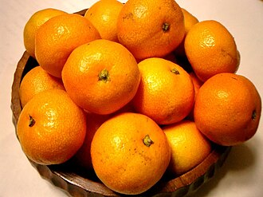

みかんの生産量 都道府県ランキング
全20都道府県の順位と収穫量
みかんの収穫量が全国で最も多いのは和歌山県で、14万1,700 tです。全国（55万9,600 t）の25%を占めます。

| 順位 | 都道府県 | 収穫量 | 全国に占める割合 |
|---|---|---|---|
| 1位 | 和歌山県 | 14万1,700 t | 25% |
| 2位 | 静岡県 | 8万8,500 t | 16% |
| 3位 | 愛媛県 | 7万6,100 t | 14% |
| 4位 | 熊本県 | 6万3,800 t | 11% |
| 5位 | 佐賀県 | 2万9,400 t | 5.3% |
| 6位 | 長崎県 | 2万9,100 t | 5.2% |
| 7位 | 愛知県 | 1万9,600 t | 3.5% |
| 8位 | 福岡県 | 1万3,400 t | 2.4% |
| 9位 | 三重県 | 1万2,200 t | 2.2% |
| 10位 | 広島県 | 1万1,100 t | 2.0% |
| 11位 | 大阪府 | 1万300 t | 1.8% |
| 12位 | 鹿児島県 | 9,500 t | 1.7% |
| 13位 | 神奈川県 | 9,340 t | 1.7% |
| 14位 | 香川県 | 9,090 t | 1.6% |
| 15位 | 徳島県 | 7,940 t | 1.4% |
| 16位 | 大分県 | 7,880 t | 1.4% |
| 17位 | 宮崎県 | 5,970 t | 1.1% |
| 18位 | 高知県 | 4,650 t | 0.8% |
| 19位 | 山口県 | 4,620 t | 0.8% |
| 20位 | 千葉県 | 753 t | 0.1% |
みかんの生産量の推移（令和2年産〜令和6年産）
全国の収穫量は、令和2年産の76万5,800 tから令和6年産の55万9,600 tへ、27%減りました。期間中、1位は一貫して和歌山県です。
| 年 | 全国 | 1位 | 2位 | 3位 |
|---|---|---|---|---|
| 令和6年産 | 55万9,600 t | 和歌山県14万1,700 t | 静岡県8万8,500 t | 愛媛県7万6,100 t |
| 令和5年産 | 68万1,600 t | 和歌山県14万3,900 t | 愛媛県11万1,100 t | 静岡県9万9,800 t |
| 令和4年産 | 68万2,200 t | 和歌山県15万2,500 t | 愛媛県10万9,300 t | 静岡県10万3,000 t |
| 令和3年産 | 74万9,000 t | 和歌山県14万7,800 t | 愛媛県12万7,800 t | 静岡県9万9,700 t |
| 令和2年産 | 76万5,800 t | 和歌山県16万7,100 t | 静岡県11万9,800 t | 愛媛県11万2,500 t |
この数字について
- 分類：ミカン科
- 全国の収穫量：55万9,600 t
- この数字が表すもの：収穫量（収穫された重量）
- 調査：作物統計調査 作況調査（果樹） 令和6年産
- 20県分を調査（調査していない県は順位に入りません）
みかんの生産量について、よくある質問
- みかんの生産量が日本一の都道府県はどこですか？
- 和歌山県です。作物統計調査 作況調査（果樹）（令和6年産）で14万1,700 tでした。
- みかんの生産量ランキング2位・3位はどこですか？
- 2位は静岡県（8万8,500 t）、3位は愛媛県（7万6,100 t）です。
- みかんの生産量ランキング4位・5位はどこですか？
- 4位は熊本県（6万3,800 t）、5位は佐賀県（2万9,400 t）です。みかんの全20県の順位は上の表のとおりです。
- みかんの全国の生産量はどれくらいですか？
- 55万9,600 t（令和6年産）です。